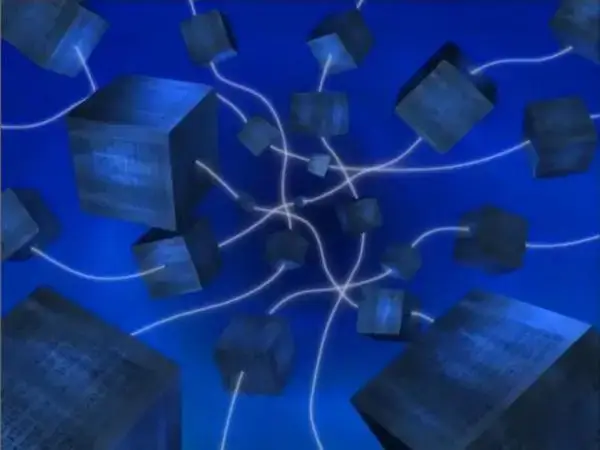

Glosario
-
Jolly Roger
La Jolly Roger, también conocida como la bandera pirata, es la bandera clásica de los piratas europeos y del Caribe, vista aún hoy como una calavera con dos tibias cruzadas tras ella sobre un fondo negro. Es un símbolo reconocido de peligro en todo el mundo.
En One Piece hay muchos tipos de banderas Jolly Roger. Las Jolly Roger ayudan a los demás piratas a saber a quién pertenece la banda o que es un pirata en primer lugar.

-
La Peor Generación
La peor generación, es un término usado para referirse a los once piratas cuyas recompensas superaban los 100.000.000 berries cuando llegaron al Archipiélago Sabaody justo antes de la Guerra de Marineford, junto al actual Emperador del Mar, Marshall D. Teach.
- Marshall D. Teach
- Monkey D. Luffy
- Trafalgar D. Water Law
- Eustass Kid
- Roronoa Zoro
- Capone Bege
- Scratchmen Apoo
- Jewelry Bonney
- Basil Hawkins
- X Drake
- Killer
-
Siglo Vacío
El Siglo Vacío, también conocido como el Vacío de la Historia, es un largo período de tiempo de una centuria que comenzó hace 900 años y acabó hace 800 años desde la línea temporal actual del que no se tienen registros arqueológicos ni históricos. Por razones desconocidas, la investigación sobre este período es considerado un crimen capital por el Gobierno Mundial. Los acontecimientos de este período son tan relevantes e importantes, que se dice que, al conocerlos, uno toma conciencia de la «verdadera historia» del mundo. El sueño de Nico Robin, desde que era una niña, ha sido descubrir la verdad del Siglo Vacío.
 -
Sunnachi
Sunnachi es la abreviatura de una frase que se traduce como "Dejar atrás tu nombre y fama". Se vió en el recuerdo de Ashura Doji, un samurai de Wano, con sus aliados hace diez años, cuando eran niños, entre cuarenta y cincuenta años del presente, usaron el grito de Sunnachi como una forma de aumentar su autoestima y coraje. El grito los alentó a dejar de pensar y preocuparse por el peligro en el que pueden estar y a simplemente actuar. Los compañeros de Ashura, dieron ese grito una vez más diez años antes del presente, cuando emprendieron el asalto a Onigashima para intentar derrocar a Kaido. Parece ser considerado un lenguaje grosero usado por los plebeyos, ya que Kikunojo, una samurai, le dijo a Kozuki Momonosuke que era inapropiado para él, como hijo de un daimyo, usarlo.

-
Voluntad heredada
La voluntad heredada, se refiere a transmitir los propios sueños e ideales a las generaciones futuras. es la idea de que los vivos portarán los ideales de las generaciones pasadas. Aquellos que creen en el concepto de heredado tenderán a aceptar su propia mortalidad y confiarán sus sueños a la gente de la próxima era. La voluntad heredada no es algo vinculado por sangre o linaje.
La primera mención de la voluntad heredada dada en la serie se presentó en una cita de Gol D. Roger. Roger creía que esta era una de las cosas que nunca podría detenerse mientras el hombre buscara la respuesta a la libertad
Estas cosas no se pueden detener: voluntad heredada. Sueños de la gente. El reflujo y el fluir de las edades. Mientras la gente busque la respuesta a la libertad, ¡nunca dejará de serlo! -Rey pirata Gold Roger